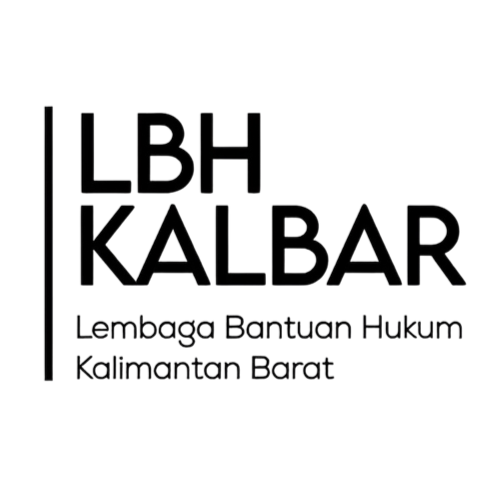

Junior GIS Surveyor
LBH KALBAR
- Conducted topographic surveys and geospatial mapping across 3 active mining blocks and 2 bauxite processing facilities covering 500+ hectares.
- Monitored surface water quality across 8 major rivers to evaluate environmental impact.
- Executed soil quality surveys by participating in 4 shallow drilling operations.
- Managed and documented 100+ geospatial and field datasets.